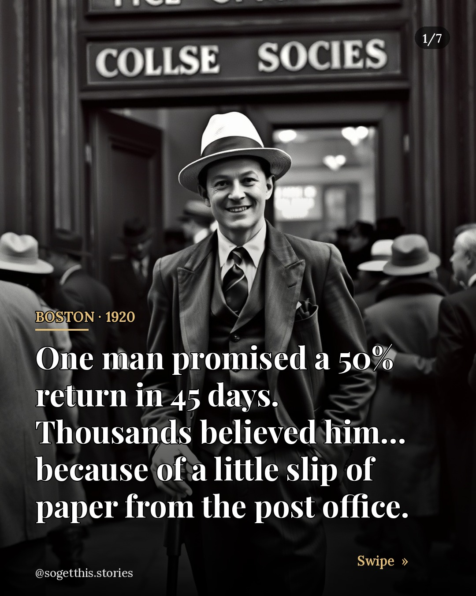

Boston · 1920
Charles Ponzi and the post office coupon scam
Incredible returns, lines around the block… and nothing behind it. The true story of Charles Ponzi in 1920s Boston, the man who gave his name to the Ponzi scheme. 💸
📖 Want more? Read: Ponzi's Scheme: The True Story of a Financial Legend · Mitchell Zuckoff
📚 Sources: Smithsonian National Postal Museum — Ponzi Scheme · Mass Moments — Ponzi scheme begins to unravel · Mitchell Zuckoff, Ponzi's Scheme (Random House)